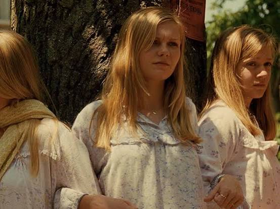
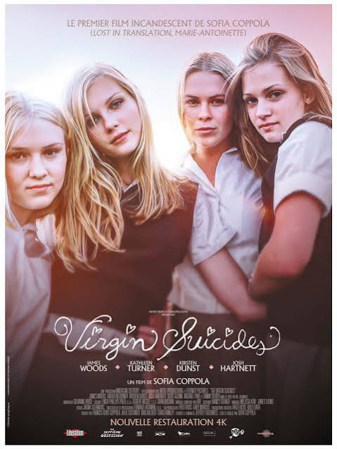
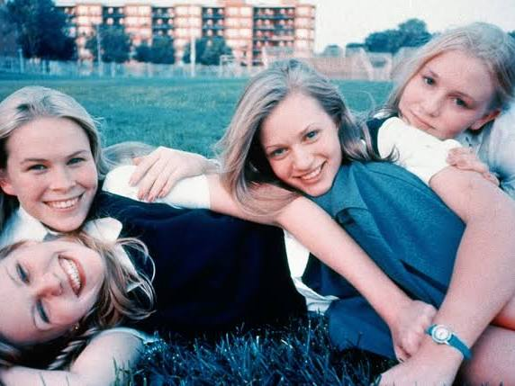

Conversation 941
The Virgin Suicides
Prompt 1 · You
virgin suicide
Response 1 · Google AI Mode



The Virgin Suicides is a 1999 psychological drama film written and directed by Sofia Coppola in her feature directorial debut. Based on the celebrated 1993 debut novel by Jeffrey Eugenides, the story follows the lives and tragic fates of the five adolescent Lisbon sisters in a strict, upper-middle-class suburb of Detroit during the mid-1970s. The narrative is uniquely framed from the perspective of a group of neighborhood boys who remain deeply obsessed with decoding the mysteries of the sisters 25 years later.  Wikipedia +3
Wikipedia +3
Wikipedia +3Key Facts & Credits
- Director & Screenplay: Sofia Coppola
- Starring: Kirsten Dunst, Josh Hartnett, James Woods, and Kathleen Turner
- Soundtrack: Created by the French electronic duo Air, which became highly acclaimed as one of the greatest film score albums ever made.
- Critical Reception: It holds an 80% Tomatometer score on Rotten Tomatoes and is widely praised for its dreamlike melancholy, visual aesthetics, and representation of youth disillusionment. Wikipedia +3
Where to Watch in the Netherlands
If you are looking to stream or rent the film locally, it is available on these digital platforms:  Google
Google
Google- Streaming Subscription: Available on MUBI.
- Streaming Channels: Available on Amazon Prime Video (requires a specific channel add-on).
- VOD Rentals: You can rent it digitally for €3.99 on Google Play Movies & TV or YouTube. Google
Are you looking for more details regarding the plot summary, a deep dive into the themes and ending, or info about the original Jeffrey Eugenides novel? Let me know how you want to expand the conversation!
Source links preserved from this response
- en.wikipedia.org
https://en.wikipedia.org/wiki/The_Virgin_Suicides_(film) - Sofia Coppola
https://en.wikipedia.org/wiki/Sofia_Coppola - Kirsten Dunst
https://en.wikipedia.org/wiki/Kirsten_Dunst - Josh Hartnett
https://en.wikipedia.org/wiki/Josh_Hartnett - Air
https://en.wikipedia.org/wiki/Air_(French_band) - Rotten Tomatoes
https://www.rottentomatoes.com/m/virgin_suicides - nl.wikipedia.org
https://nl.wikipedia.org/wiki/The_Virgin_Suicides - support.google.com
https://support.google.com/knowledgepanel/answer/9787176 - mubi.com
https://mubi.com/films/the-virgin-suicides - MUBI
https://mubi.com/films/the-virgin-suicides?utm_source=where_to_watch - www.primevideo.com
https://www.primevideo.com/ - Amazon Prime Video
https://www.primevideo.com/dp/amzn1.dv.gti.9e6198cb-bbee-4421-9976-1636fb616e98?autoplay=0&ref_=atv_cf_strg_wb - play.google.com
https://play.google.com/ - Google Play Movies & TV
https://play.google.com/store/movies/details?id=m04zBk8UWPA.P - www.youtube.com
https://www.youtube.com/ - YouTube
https://www.youtube.com/watch?v=UK9pSf3PKIo